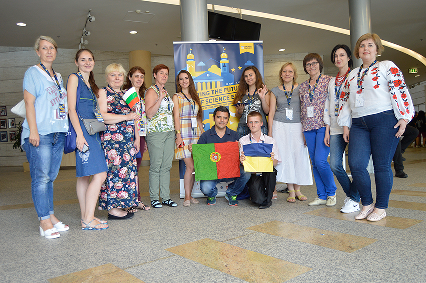

Шановні, ДРУЗІ !
Повідомляємо Вам, що 18-19 листопада 2016 року дванадцять найкращих вчителів природничо-наукового напрямку та викладачів природи у початковій школі стали переможцями національного відбору на Європейський фестиваль «НАУКА на СЦЕНІ» (Science on Stage) для вчителів з надзвичайними ідеями викладання природничих наук. Організаторами проекту Science on Stage Ukraine був Харківський національний університет ім. В. Н. Каразіна та ГО Центр розвитку обдарованості юнацтва. Головою міжнародного журі був проф. Девід Фітонбі з Великобританії. Ярмарок вчительських інновацій відвідали вчителі та учні Харкова та області, декілька відвідувачів приїхало з восьми міст України. Почесним членом журі була представник від Міністерства Освіти і Науки України пані Світлана Фітцайло. Вчителів природничо-наукового напрямку із Києва, Харкова, Сум, Яготина та Маріуполя було відібрано для безкоштовної участі в міжнародному Фестивалі Наука на Сцені в Угорщині. Переможці (див. фото 1) успішно представили нашу країну на Європейському ярмарку педагогічних інновацій «Science on Stage» з 29 червня по 3 липня 2017 року у місті Дебрецен.

Дванадцять переможців на фестивалі Наука на Сцені у місті Дебрецен
Ми не збираємось зупинятися. Запрошуємо усіх бажаючих випробувати себе та готових представити свої інноваційні ідеї у викладанні предметів природничо-наукового напрямку (STEM предмети – це фізика, хімія, біологія, інформатика, математика, трудове навчання та природознавство у молодших класах) до участі у національному Фестивалі-отборі, який відбудеться 26-27 жовтня 2018 року у ХНУ ім. Каразіна. РЕЄСТРУЙТЕСЯ на сайті.